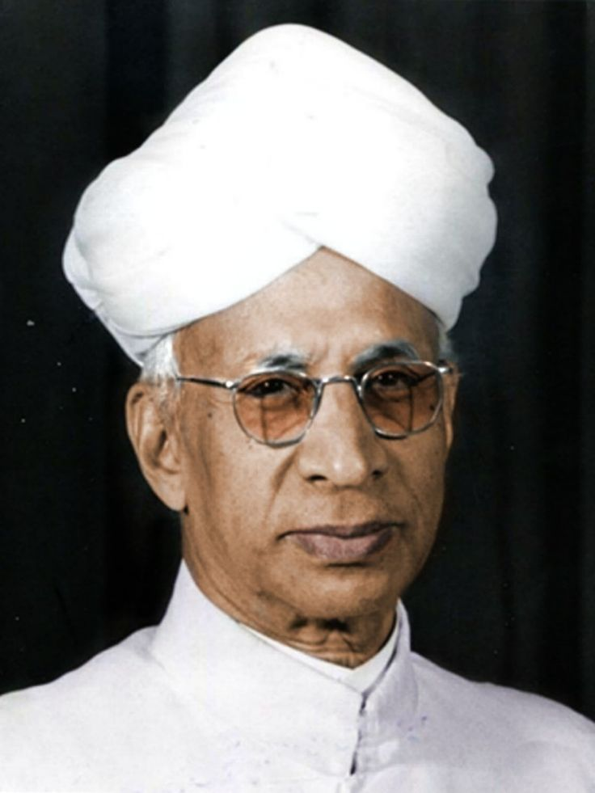

Who Was Sarvepalli Radhakrishnan?
Sarvepalli Radhakrishnan was an Indian philosopher, professor, and statesman who lived from 1888 to 1975. He is remembered as one of the most influential interpreters of Advaita Vedanta for the modern world, and as a rare figure in the history of philosophy who moved seamlessly between the university lecture hall and the highest offices of a modern nation, eventually serving as the second President of India.
Radhakrishnan is especially associated with presenting Indian philosophy, and Vedanta in particular, to a global audience in a way that engaged directly and confidently with Western philosophical traditions, including idealism, empiricism, and the philosophy of religion. Rather than treating Indian and Western philosophy as separate and incompatible traditions, his work consistently sought to place them in serious comparative dialogue with one another.
Trained first in Christian mission colleges in colonial South India and later becoming one of the most celebrated professors of philosophy of his generation, Radhakrishnan held academic positions at leading Indian universities and eventually became the Spalding Professor of Eastern Religion and Ethics at the University of Oxford, a position from which he introduced generations of Western students and scholars to Indian philosophical thought.
Because his career spanned both rigorous academic philosophy and high political office, historians and philosophers alike continue to debate how his practical responsibilities as a statesman shaped, or were shaped by, his underlying philosophical commitments. His lasting importance nonetheless remains considerable, since his writings did more than perhaps any other single body of work to make classical Indian philosophy a serious subject of study within modern global academic philosophy.
Sarvepalli Radhakrishnan: Quick Facts
- Name — Sarvepalli Radhakrishnan
- Period — 1888–1975
- Born in — Tiruttani, Madras Presidency, in present-day Tamil Nadu, India
- Philosophical period — Modern Indian philosophy
- Associated with — Advaita Vedanta and comparative East-West philosophy
- Known for — Reinterpreting Vedanta through intuition and idealist philosophy
- Major works — Indian Philosophy, The Hindu View of Life, An Idealist View of Life
- Academic position — Spalding Professor of Eastern Religion and Ethics, Oxford University
- Political role — Second President of India (1962–1967), first Vice President (1952–1962)
- Legacy — India's Teacher's Day is celebrated annually on his birthday
Radhakrishnan and Indian Philosophy in the Colonial and Modern Era

Radhakrishnan came of age during the final decades of British colonial rule in India, a period in which Indian philosophical and religious traditions were frequently dismissed or misrepresented within much of contemporary Western scholarship, often treated as merely exotic, mystical, or philosophically undeveloped rather than as serious systems of rational inquiry.
Educated within the colonial mission college system, which emphasized Western philosophy and Christian theology, Radhakrishnan developed an early and sustained determination to demonstrate that classical Indian philosophical traditions, particularly Vedanta, could stand on equal intellectual footing with the systems of Kant, Hegel, and other major figures of modern Western philosophy that dominated his formal education.
This period also coincided with a broader Indian intellectual and cultural reawakening, in which figures across literature, religion, and politics sought to reclaim and reinterpret Indian traditions in ways that could engage confidently with modernity rather than simply defending them against colonial criticism or retreating into unreflective traditionalism.
In the intellectual environment associated with Radhakrishnan, philosophical work therefore carried genuine cultural and even political significance, treating the serious academic interpretation of Vedanta not merely as a scholarly exercise but as part of a larger project of demonstrating the philosophical maturity and continuing relevance of Indian thought on the world stage.
Who Was Sarvepalli Radhakrishnan and What Did He Do?
Radhakrishnan was born in the small town of Tiruttani, in the Madras Presidency of colonial India, into a family of modest means. He received his early education at Christian mission institutions, including Madras Christian College, where he studied philosophy and was exposed to a rigorous grounding in Western philosophical traditions alongside his own inherited familiarity with Hindu religious and philosophical thought.
His early academic writing, including his postgraduate thesis examining the ethics of the Vedanta tradition, was shaped significantly by his desire to respond to criticisms from Western missionary scholars who had characterized Vedanta philosophy as ethically deficient, a challenge that set the direction for much of his later scholarly career defending and reinterpreting Indian philosophical traditions.
Radhakrishnan went on to hold professorships at several major Indian universities, including the University of Mysore and the University of Calcutta, before being appointed to the prestigious Spalding Professorship of Eastern Religion and Ethics at Oxford University in 1936, a position that placed him at the center of Western academic engagement with Indian philosophy for over a decade.
Following India's independence, Radhakrishnan transitioned into public service, representing India as ambassador to the Soviet Union, before serving as the country's first Vice President from 1952 to 1962 and subsequently as its second President from 1962 to 1967, becoming one of the very few philosophers in modern history to hold the highest office of a major nation.
What can be established with considerable confidence, given the extensive documentary record of his modern life, is the sheer scale of his influence across both academic philosophy and public life, and the durability of his legacy, still marked annually in India through the national observance of Teacher's Day on his birthday.
What Did Sarvepalli Radhakrishnan Believe?
Radhakrishnan's philosophy centers on a reinterpretation of Advaita Vedanta, the non-dualist tradition associated with Adi Shankaracharya, presented in a form that engages directly with the vocabulary and concerns of modern Western idealist philosophy, particularly the traditions associated with Hegel and other post-Kantian idealists.
At the center of this philosophy lies the conviction that ultimate reality, which Radhakrishnan generally identifies with Brahman, can be genuinely known, not merely believed in on the authority of scripture, through a distinctive form of direct apprehension he calls intuition, or integral experience, which he treats as a valid and irreducible source of knowledge alongside ordinary sense perception and discursive reasoning.
Radhakrishnan's account of religious experience presents this intuitive apprehension of ultimate reality as a capacity latent within every human being and, importantly, as a common thread running through the mystical and devotional traditions of many of the world's major religions, a position that shaped his lifelong interest in comparative religion and interfaith understanding.
Unlike some more austere presentations of Advaita Vedanta, Radhakrishnan's interpretation places considerable emphasis on ethical life and social engagement in the world, resisting readings of non-dualist philosophy that might seem to encourage withdrawal from practical responsibility, and consistently arguing that genuine spiritual realization should express itself through active ethical and social contribution.
Scholars of Indian philosophy continue to debate how faithfully Radhakrishnan's interpretation preserves the specific arguments and technical vocabulary of classical Advaita as developed by Shankaracharya and his traditional commentators, with some traditionalist critics arguing that his reading imports significant elements of Western idealist philosophy not present in the original Sanskrit sources, while his defenders view this synthesis as a legitimate and valuable act of philosophical translation for a modern global audience.
Radhakrishnan's Philosophy of Intuition and Integral Experience
Intuition, which Radhakrishnan also frequently calls integral experience, occupies a central and distinctive place within his overall philosophy, functioning as a mode of knowing that he argues is neither reducible to, nor in genuine conflict with, ordinary sense perception and logical reasoning.
Radhakrishnan describes this intuitive knowledge as a direct, immediate apprehension of reality that carries its own distinctive form of certainty, comparable in its immediacy to the way one directly experiences one's own consciousness, yet extending, in its highest form, to a direct encounter with the underlying spiritual unity of existence itself.
Importantly, Radhakrishnan insists that this intuitive dimension of knowledge does not operate in isolation from reason but instead complements and is later expressed through rational and conceptual reflection, comparing the relationship between intuition and reason to a seed and its subsequent intellectual elaboration, in which the initial intuitive insight requires careful rational articulation to become fully communicable and systematically understood.
This theory of knowledge allowed Radhakrishnan to defend the epistemic seriousness of religious and mystical experience against purely empiricist or rationalist objections, while still insisting that such experience must ultimately submit to careful rational scrutiny and coherent philosophical articulation rather than being treated as immune from critical examination.
Radhakrishnan's Modern Interpretation of Advaita Vedanta
Radhakrishnan's engagement with Advaita Vedanta represents one of the most influential modern reinterpretations of Shankaracharya's non-dualist philosophy, presenting its core claims in a vocabulary designed to resonate with readers trained in modern Western philosophical categories.
Where classical Advaita commentary often proceeds through close textual analysis of the Upanishads, the Brahma Sutras, and the Bhagavad Gita, Radhakrishnan's own writing frequently draws explicit comparisons with Western idealist philosophers, presenting Brahman's relationship to the manifest world in terms that echo discussions of the Absolute found in the work of Hegel and other post-Kantian thinkers.
Radhakrishnan also placed distinctive emphasis on interpreting the doctrine of maya, the classical Advaita account of the world's provisional or dependent reality, in a manner that avoids suggesting the everyday world is a mere illusion to be dismissed, instead framing it as a real but incomplete and spiritually transparent manifestation of the underlying absolute reality.
This interpretive approach allowed Radhakrishnan to present Vedanta as a philosophy fully compatible with active ethical and social engagement, countering a common criticism that non-dualist metaphysics necessarily encourages withdrawal from worldly responsibility, and instead arguing that a correct understanding of the ultimate unity of reality should deepen, rather than undermine, one's sense of ethical connection to others.
This reinterpretation proved enormously influential in shaping how Advaita Vedanta came to be understood, taught, and discussed within twentieth-century global academic philosophy, even as it continues to generate serious scholarly debate about its fidelity to the classical Sanskrit commentarial tradition.
Radhakrishnan as a Bridge Between Eastern and Western Philosophy
A defining feature of Radhakrishnan's entire philosophical career was his sustained commitment to serious comparative engagement between Indian and Western philosophical traditions, treating both as legitimate and mutually illuminating resources for addressing shared human philosophical questions.
Rather than presenting Indian philosophy defensively, as though it required protection from Western criticism, Radhakrishnan consistently argued that Indian and Western traditions could engage one another as genuine intellectual equals, each capable of contributing distinctive insights and each subject to fair critical examination from the other's perspective.
His widely read two-volume work, Indian Philosophy, composed for an international academic audience, systematically surveyed the major schools of classical Indian thought using categories and comparative references designed to make this material genuinely accessible and intellectually serious for readers trained primarily in the Western philosophical canon.
Through his extensive lecturing, writing, and personal diplomatic relationships, including his tenure as India's ambassador to the Soviet Union and his years teaching at Oxford, Radhakrishnan became one of the most visible and influential advocates for serious global philosophical dialogue during a period when such cross-cultural academic exchange remained far less common than it is today.
Radhakrishnan's Major Philosophical Works
Radhakrishnan's most comprehensive scholarly achievement is his two-volume Indian Philosophy, published in the 1920s, which remains one of the most widely referenced English- language surveys of the classical schools of Indian thought, from the Vedic period through the major Vedanta, Nyaya, Samkhya, Buddhist, and Jain traditions.
The Hindu View of Life, based on a series of lectures delivered at Oxford, offers a more accessible exposition of Hindu religious and philosophical thought aimed at a broad general audience, presenting Hinduism as a living, rationally defensible worldview rather than a fixed set of rituals or dogmas.
His An Idealist View of Life, delivered as the prestigious Hibbert Lectures, presents his most systematic statement of his own constructive philosophical position, developing at length his theory of intuitive knowledge and its relationship to religious experience across different world traditions.
Radhakrishnan also produced influential English translations and commentaries on several central texts of the Vedanta tradition, including The Bhagavadgita, The Principal Upanishads, and The Brahma Sutra, each combining careful textual scholarship with his own distinctive philosophical interpretation, and each becoming widely used introductory resources for students of Indian philosophy around the world.
Radhakrishnan as Philosopher and Statesman
Radhakrishnan's transition from academic philosophy to high political office represents one of the most distinctive features of his career, raising enduring questions about the relationship between philosophical reflection and practical political leadership that he himself addressed directly in some of his later writing and public statements.
As Vice President and later President of India, Radhakrishnan continued to present himself publicly as a teacher and philosopher first, famously requesting, when his birthday was proposed as a national celebration in his honor, that the day instead be observed as a tribute to teachers generally, a request that led directly to the establishment of India's national Teacher's Day on September 5 each year.
His public role also allowed him to continue advocating for the values he had developed through decades of academic study, particularly his emphasis on tolerance, comparative understanding between different religious and philosophical traditions, and the ethical responsibility of engaged, reflective citizenship, themes that appear consistently across both his scholarly writing and his public addresses as a statesman.
This combination of serious academic achievement and high public office remains a relatively rare pattern in the modern history of philosophy, and it continues to shape how Radhakrishnan is remembered in India, where he is honored simultaneously as a major intellectual figure and as a distinguished former head of state.
Radhakrishnan Compared with Classical Vedanta Philosophers
Radhakrishnan's philosophy is often discussed in relation to the classical Vedanta commentators who preceded him by many centuries, particularly Adi Shankaracharya, whose non-dualist system Radhakrishnan explicitly claimed to be reinterpreting and defending for a modern audience.
Where Shankaracharya's Advaita developed through detailed Sanskrit commentary on the Upanishads and the Brahma Sutras within a medieval Indian scholastic context, Radhakrishnan's version of Advaita developed through direct engagement with modern Western philosophical literature, comparative religious studies, and the specific intellectual challenges posed by colonial-era criticism of Hindu philosophy.
Radhakrishnan's philosophy also differs from the strict dualism of Madhvacharya and other theistic Vedanta schools by continuing to affirm, in the broadly non-dualist tradition of Shankaracharya, the ultimate underlying unity of reality, even while placing far greater emphasis than some traditional Advaita commentators on the value and reality of ethical engagement within the everyday world.
This comparison illustrates how Radhakrishnan's contribution to Indian philosophy operates less as an entirely new philosophical system and more as a sustained act of interpretation and translation, situating the arguments of classical Vedanta within the concerns and vocabulary of twentieth-century global philosophy while remaining in continuous dialogue with the tradition's earlier historical development.
Sarvepalli Radhakrishnan: Main Philosophical Ideas
Because Radhakrishnan's philosophical output spans several major works composed across decades, his central ideas are often summarized under a small number of key headings drawn from across his career.
Intuition as a Source of Knowledge
Radhakrishnan argued that intuitive, integral experience is a genuine and irreducible source of knowledge, distinct from but complementary to sense perception and discursive reasoning.
A Modern Reading of Advaita Vedanta
His reinterpretation of non-dualist Vedanta engaged directly with Western idealist philosophy, presenting Brahman and the world's dependent reality in terms accessible to modern comparative philosophy.
Comparative Religion and Universal Spiritual Experience
Radhakrishnan treated intuitive religious experience as a common thread running through many of the world's major religious traditions, supporting his lifelong interest in interfaith understanding.
Ethical Engagement Within the World
Unlike readings of Advaita that might encourage withdrawal from worldly responsibility, Radhakrishnan insisted that genuine spiritual realization should express itself through active ethical and social contribution.
Philosophy as Public Service
Radhakrishnan's transition into statesmanship reflected his conviction that philosophical values of tolerance and reflective understanding belonged as much in public life as in the university lecture hall.
What Do We Actually Know About Radhakrishnan's Philosophy?
Because Radhakrishnan lived within recent historical memory and left an extensive documented record of his writing, lectures, and public life, his biography is unusually well established compared with many earlier Indian philosophers; the more significant debates concern the interpretation of his philosophical positions rather than uncertainty about his life.
Relatively Well-Attested
- Radhakrishnan was born in Tiruttani in 1888 and died in 1975.
- He held professorships at the University of Mysore, the University of Calcutta, and Oxford University.
- He served as India's first Vice President and second President.
- He authored Indian Philosophy, The Hindu View of Life, and An Idealist View of Life, among many other works.
- India's Teacher's Day is observed annually on his birthday, at his own request.
Widely Discussed Interpretive Themes
- His theory of intuition as a distinct and valid source of knowledge.
- His comparative approach to Indian and Western philosophical traditions.
- His emphasis on ethical engagement within a broadly non-dualist metaphysical framework.
Areas of Ongoing Scholarly Debate
- Whether his reading of Advaita Vedanta faithfully preserves the arguments of Shankaracharya's classical commentaries.
- The extent to which his philosophy imports categories from Western idealism not native to the original Sanskrit sources.
- How his political career and diplomatic responsibilities may have shaped the emphasis and presentation of his philosophical writing.
- How his comparative claims about universal religious experience hold up against more particularist accounts of specific religious traditions.
Why Is Sarvepalli Radhakrishnan Important in Philosophy?
Radhakrishnan is important because he did more than perhaps any other single modern philosopher to establish classical Indian philosophy as a serious subject of study within global academic philosophy, presenting it in direct, confident dialogue with Western philosophical traditions rather than as a separate or subordinate field.
His philosophical legacy raises a fundamental question that remains significant for epistemology and the philosophy of religion: Can intuitive or mystical experience count as a genuine source of knowledge alongside perception and reason, and if so, how should that knowledge be rationally articulated and evaluated?
This question has continued to shape debates in comparative philosophy and the philosophy of religion, as later scholars examined how Radhakrishnan's account of intuitive experience relates to both classical Vedanta epistemology and Western philosophical discussions of mysticism and religious knowledge.
Radhakrishnan's importance therefore does not depend on resolving every scholarly debate about the fidelity of his interpretation to classical sources. His significance comes from his role as one of the most influential bridge figures between Indian and Western philosophy, whose writing continues to shape how Vedanta and comparative philosophy are studied and taught around the world.
Sarvepalli Radhakrishnan Explained Simply
Sarvepalli Radhakrishnan was a twentieth-century Indian philosopher and statesman who reinterpreted Advaita Vedanta for the modern world, arguing that intuitive experience is a genuine source of knowledge alongside reason and perception.
Instead of treating Indian and Western philosophy as separate and incompatible traditions, Radhakrishnan's work placed them in direct comparative dialogue, presenting classical Vedanta concepts in a form that could be seriously engaged with by readers trained in modern academic philosophy.
His remarkable career, spanning Oxford professorships and the presidency of India, remains one of the most distinctive examples of a philosopher moving directly from academic scholarship into the highest levels of public and political life.
- Philosopher: Sarvepalli Radhakrishnan
- Period: 1888–1975
- Tradition: Modern interpretation of Advaita Vedanta
- Major doctrine: Intuition, or integral experience, as a source of knowledge
- Central concern: Bridging Indian and Western philosophy
- Major work: Indian Philosophy (two volumes)
- Academic role: Spalding Professor of Eastern Religion and Ethics, Oxford
- Political role: Second President of India
A Principle Central to Radhakrishnan's Philosophy
“Truth cannot be handed down from generation to generation; each individual must acquire it for himself.”
Frequently Asked Questions About Sarvepalli Radhakrishnan
Who was Sarvepalli Radhakrishnan?
Sarvepalli Radhakrishnan was a twentieth-century Indian philosopher and statesman who reinterpreted Advaita Vedanta for a modern audience, taught philosophy at Oxford, and served as the second President of India.
What is Radhakrishnan famous for?
Radhakrishnan is famous for his scholarly works Indian Philosophy and The Hindu View of Life, his theory of intuition as a source of knowledge, and his career as both an Oxford professor and the President of India.
What did Radhakrishnan believe?
Radhakrishnan believed that ultimate reality can be directly known through intuitive, integral experience, that this experience underlies the mystical traditions of many world religions, and that genuine spiritual realization should express itself through active ethical engagement in the world.
What is Radhakrishnan's philosophy of intuition?
Radhakrishnan argued that intuition, or integral experience, is a distinct and valid source of knowledge alongside perception and reason, capable of directly apprehending spiritual reality in a way that discursive logic alone cannot fully achieve.
How did Radhakrishnan interpret Advaita Vedanta?
Radhakrishnan reinterpreted Shankaracharya's Advaita Vedanta using categories drawn from Western idealist philosophy, emphasizing ethical engagement within the world rather than withdrawal from it, a reading that remains debated among traditionalist Vedanta scholars.
What are Radhakrishnan's major works?
Radhakrishnan's major works include the two-volume Indian Philosophy, The Hindu View of Life, An Idealist View of Life, and his translations and commentaries on the Bhagavad Gita, the Principal Upanishads, and the Brahma Sutra.
Why is Teacher's Day celebrated on Radhakrishnan's birthday in India?
India celebrates Teacher's Day on September 5, Radhakrishnan's birthday, in honor of his lifelong career as a philosophy professor and his own request that the day be marked as tribute to teachers rather than to him personally.
What political positions did Radhakrishnan hold?
Radhakrishnan served as India's first Vice President from 1952 to 1962 and as its second President from 1962 to 1967, in addition to earlier serving as India's ambassador to the Soviet Union.
How is Radhakrishnan different from earlier Vedanta philosophers like Shankaracharya?
Shankaracharya developed Advaita Vedanta through medieval Sanskrit commentary on the Upanishads and Brahma Sutras, while Radhakrishnan reinterpreted the same tradition through direct engagement with modern Western philosophy and comparative religious studies.
Why is Radhakrishnan important today?
Radhakrishnan remains important because his writing continues to shape how Vedanta and Indian philosophy are studied within global academic philosophy, and because his career exemplifies a rare and influential bridge between philosophical scholarship and public life.
Related Indian Philosophers
Sarvepalli Radhakrishnan belongs to the wider tradition of Vedanta and modern Indian philosophy. Explore philosophers who shaped the traditions he sought to interpret and reinterpret.
Philosophy Branches Connected to Radhakrishnan
Radhakrishnan's philosophical legacy is particularly important for epistemology, where philosophers investigate the sources and limits of knowledge, and for the philosophy of religion, which examines the nature of religious and mystical experience.
Why Sarvepalli Radhakrishnan Still Matters
Radhakrishnan did not simply repeat the arguments of classical Vedanta commentators, nor did he abandon their core insights in favor of purely Western categories; instead, he undertook a sustained act of philosophical translation that continues to shape how Indian philosophy is understood on the world stage.
Yet the questions associated with Radhakrishnan remain fundamental to philosophy: Can intuitive experience genuinely count as knowledge? Can distinct religious traditions share an underlying experiential core? What responsibility does philosophical understanding place on a person's public and ethical life?
The comparative philosophical project he pursued across decades of scholarship and public service transformed these questions into one of the most influential modern engagements between Indian and Western thought. His emphasis on intuition, ethical engagement, and cross-cultural philosophical dialogue made Sarvepalli Radhakrishnan one of the most significant bridge figures in the history of modern philosophy.
Explore Great Philosophers